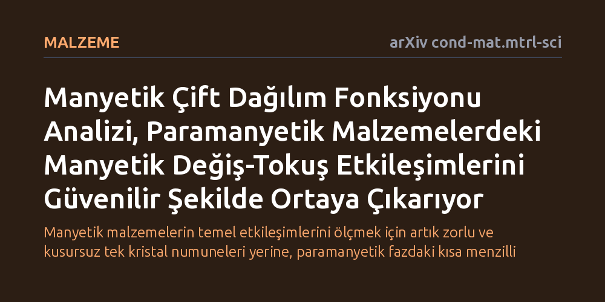

MALZEME · arXiv cond-mat.mtrl-sci · 2026-10-09
Araştırmacılar, paramanyetik malzemelerdeki manyetik etkileşimlerin manyetik çift dağılım fonksiyonu analiziyle belirlenip belirlenemeyeceğini araştırdı. Geliştirilen Onsager düzeltmeli ortalama alan yaklaşımının, gerçek uzaydaki kısa menzilli spin ilişkilerinden literatürle uyumlu manyetik etkileşim değerlerini başarıyla çıkardığı gösterildi.
Manyetik malzemelerin temel etkileşimlerini ölçmek için artık zorlu ve kusursuz tek kristal numuneleri yerine, paramanyetik fazdaki kısa menzilli düzen verileri de güvenle kullanılabilecek.

Manyetik malzemelerin temel davranışlarını ve teknolojik potansiyellerini belirleyen en kritik fiziksel özellik, atomların manyetik momentleri yani spinleri arasındaki değiş-tokuş etkileşimleridir. Bu etkileşimleri doğru şekilde saptamak; bilgi depolama sistemlerinden kuantum hesaplama platformlarına kadar birçok ileri malzemenin tasarlanmasında vazgeçilmez bir öneme sahiptir. Ancak geleneksel deneysel yöntemler, bu parametreleri ölçebilmek için malzemelerin çok düşük sıcaklıklarda uzun menzilli düzenli bir manyetik temel duruma geçmesini şart koşar.
Uzun menzilli manyetik düzene dayanan standart yaklaşım, tek kristal numuneler üzerinde esnek olmayan nötron saçılımı deneyleri yaparak spin dalgası dağılımlarını ölçmeyi gerektirir. Ne var ki kusursuz tek kristaller üretmek çoğu malzeme için ya son derece maliyetli ve zahmetlidir ya da fiziksel olarak imkansızdır. Oysa atomlar arasındaki manyetik değiş-tokuş kuvvetleri sadece bu kusursuz ve donmuş düzen hallerinde değil, malzemenin düzeninin bozulduğu daha yüksek sıcaklıktaki paramanyetik rejimde de varlığını korur. Bu durum, 'Malzemeyi zorlu tek kristal koşullarına sokmadan, paramanyetik fazdaki yerel spin ilişkilerinden bu etkileşimleri okuyabilir miyiz?' sorusunu doğurmuştur.
Araştırmacılar, geleneksel tek kristal deneylerinin kısıtlarını aşmak için manyetik çift dağılım fonksiyonu (mPDF) analizine odaklandı. Nötronların dağınık saçılımı verilerinden elde edilen bu yöntem, atomik manyetik korelasyonları doğrudan gerçek uzayda incelemeye imkan tanır. Paramanyetik bir malzemede spinler uzaktan bakıldığında bütünüyle rastgele yönelmiş görünse de, birbirine yakın atomlar kısa mesafelerde birbiriyle etkileşmeyi ve yerel korelasyonlar oluşturmayı sürdürür.
Elde edilen bu zengin saçılım verisini fiziksel parametrelere dönüştürmek için kuramsal bir köprüye ihtiyaç vardı. Yazarlar, klasik ortalama alan teorisini Onsager reaksiyon alanı düzeltmesiyle birleştiren sağlam bir teorik çerçeve geliştirdi. Onsager düzeltmesi, bir spinin çevresindeki komşularını kutuplarken oluşan tepki alanının dönüp yine aynı spini etkilemesini hesaba katarak, klasik modellerin paramanyetik bölgedeki aşırı basitleştirmelerini düzeltir. Böylece mPDF çıktılarından doğrudan değiş-tokuş katsayılarının çıkarılması mümkün kılındı.
Geliştirilen kuramsal model, literatürde manyetik özellikleri daha önce iyi incelenmiş çeşitli malzemelerin mPDF verileri üzerinde test edildi. Araştırmacılar, bu malzemelerin paramanyetik fazdaki kısa menzilli spin korelasyonlarından hareketle manyetik değiş-tokuş parametrelerini hesapladı.
Uygulanan yöntem, literatürde daha önce zorlu tek kristal deneyleriyle belirlenmiş referans değerlerle oldukça tutarlı ve karşılaştırılabilir manyetik etkileşim değerleri üretti. Bu bulgu, dağınık nötron saçılımı ve gerçek uzaydaki mPDF analizinin, uzun menzilli bir manyetik düzene ihtiyaç duymadan da manyetik parametreleri doğru biçimde belirleyebileceğini deneysel olarak doğrulamış oldu.
Bu çalışmanın ortaya koyduğu yaklaşım, manyetik malzemelerin karakterizasyonunda önemli bir deneysel esneklik sağlamaktadır. Artık kaliteli tek kristal numuneleri büyütülemeyen polikristal veya toz halindeki yeni malzemelerin manyetik etkileşimleri de paramanyetik sıcaklıklarda incelenebilecektir. Bu durum, özellikle karmaşık veya sentezi zor manyetik malzemelerin keşif ve geliştirme süreçlerini kayda değer ölçüde hızlandırabilir.
Bununla birlikte, yöntemin henüz sınırlı sayıda malzeme üzerinde gösterilmiş olması ve çok güçlü kuantum dalgalanmaları içeren egzotik sistemlerdeki sınırlarının henüz tam bilinmemesi dikkatle ele alınmalıdır. Yine de mPDF analizi ile Onsager düzeltmeli teorinin birleşimi, manyetik malzeme araştırmalarında pratik ve güçlü bir alternatif araç sunmaktadır.